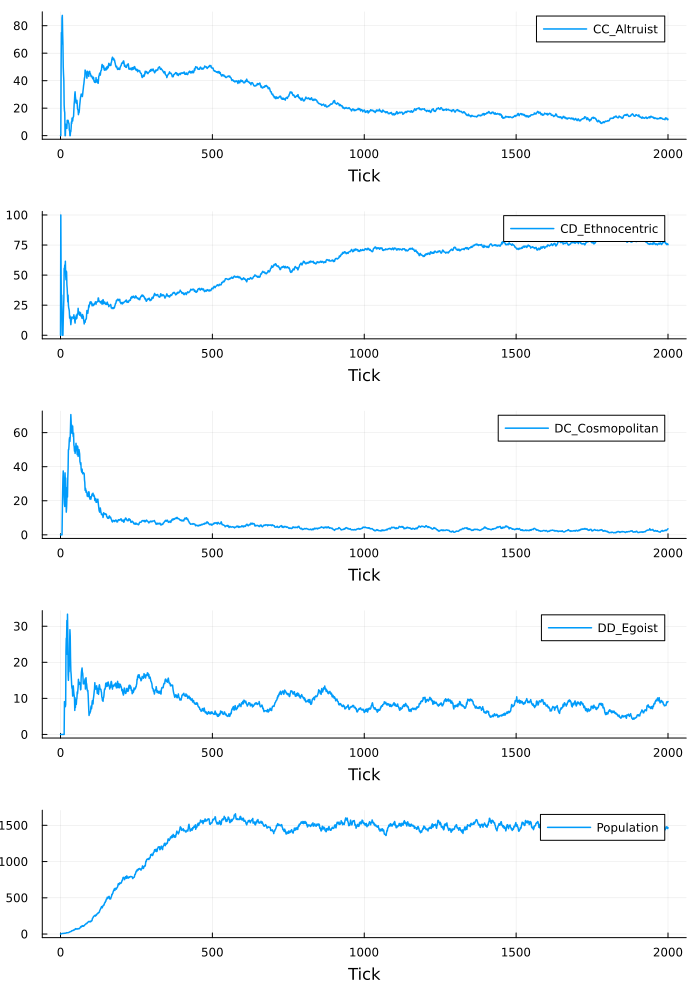
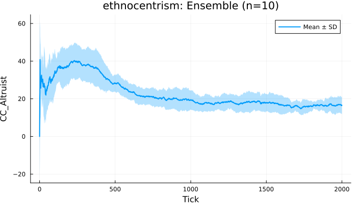
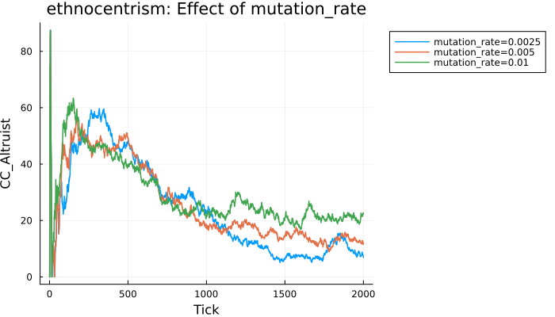

Ethnocentrism
Overview
WHAT IS IT?
This model, due to Robert Axelrod and Ross A. Hammond, suggests that “ethnocentric” behavior can evolve under a wide variety of conditions, even when there are no native “ethnocentrics” and no way to differentiate between agent types. Agents compete for limited space via Prisoner Dilemma’s type interactions. “Ethnocentric” agents treat agents within their group more beneficially than those outside their group. The model includes a mechanism for inheritance (genetic or cultural) of strategies.
HOW IT WORKS
Each agent has three traits: a) color, b) whether they cooperate with same colored agents, and c) whether they cooperate with different colored agents. An “ethnocentric” agent is one which cooperates with same colored agents, but does not cooperate with different colored agents. An “altruist” cooperates with all agents, while an “egoist” cooperates with no one. A “cosmopolitan” cooperates with agents of a different color but not of their own color.
At each time step, the following events occur:
Up to IMMIGRANTS-PER-DAY, new agents appear in random locations with random traits.
Agents start with an INITIAL-PTR (Potential-To-Reproduce) chance of reproducing. Each pair of adjacent agents interact in a one-move Prisoner’s Dilemma in which each chooses whether or not to help the other. They either gain, or lose some of their potential to reproduce.
In random order, each agent is given a chance to reproduce. Offspring have the same traits as their parents, with a MUTATION-RATE chance of each trait mutating. Agents are only allowed to reproduce if there is an empty space next to them. Each agent’s birth-rate is reset to the INITIAL-PTR.
The agent has a DEATH-RATE chance of dying, making room for future offspring and immigrants.
THINGS TO NOTICE
Agents appear as circles if they cooperate with the same color. They are filled in if they also cooperate with a different color (altruists) or empty if they do not (ethnocentrics). Agents are squares if they do not cooperate with the same color. The agents are filled in if they cooperate with a different color (cosmopolitans) or empty if they do not (egoists).
Observe the interaction along the edge of a group of ethnocentric agents, and non-ethnocentric agents. What behaviors do you see? Is one more stable? Does one expand into the other group?
Observer the STRATEGY COUNTS plot. Does one strategy occur more than others? What happens when we change the model?
THINGS TO TRY
Set the IMMIGRANT-CHANCE-COOPERATE sliders both to 1.0. This means there are only altruists created. Do ethnocentrics and other strategies ever evolve? Do they ever out compete the altruists?
Change the values of COST-OF-GIVING and GAIN-OF-RECEIVING and observe the effects on the model and the level of ethnocentricity.
This model comes with a group of BehaviorSpace experiments defined. You can access them by choosing BehaviorSpace on the Tools menu. These are the original experiments that Axelrod and Hammond ran to test the robustness of this model. These experiments vary lots of parameters like the size of the world, IMMIGRANTS-PER-DAY and COST-OF-GIVING. These experiments are detailed at http://www-personal.umich.edu/~axe/Shared_Files/Axelrod.Hammond/index.htm
EXTENDING THE MODEL
Add more colors to the model. Does the behavior change?
Make some patches richer than others, so that agents on them have a higher chance of reproducing. Distribute this advantage across the world in different ways such as randomly, in blobs, or in quarters.
Tag patches with a color. distribute the colors across the world in different ways: blobs, randomly, in discrete quarters. Agents use the patch color under other agents to determine whether to cooperate with them or not.
NETLOGO FEATURES
To ensure fairness, the agents should run in random order. Agentsets in NetLogo are always in random order, so no extra code is needed to achieve this.
RELATED MODELS
- Segregation
- PD Basic
- Ethnocentrism - Alternative Visualization
CREDITS AND REFERENCES
This model is a NetLogo version of the ethnocentrism model presented by Robert Axelrod at Northwestern University at the NICO (Northwestern Institute on Complex Systems) conference on October 25th, 2003.
See also Ross A. Hammond and Robert Axelrod, The Evolution of Ethnocentrism, http://www-personal.umich.edu/~axe/research/AxHamm_Ethno.pdf
HOW TO CITE
If you mention this model or the NetLogo software in a publication, we ask that you include the citations below.
For the model itself:
- Wilensky, U. (2003). NetLogo Ethnocentrism model. http://ccl.northwestern.edu/netlogo/models/Ethnocentrism. Center for Connected Learning and Computer-Based Modeling, Northwestern University, Evanston, IL.
Please cite the NetLogo software as:
- Wilensky, U. (1999). NetLogo. http://ccl.northwestern.edu/netlogo/. Center for Connected Learning and Computer-Based Modeling, Northwestern University, Evanston, IL.
COPYRIGHT AND LICENSE
Copyright 2003 Uri Wilensky.

This model is licensed under the Creative Commons Attribution-NonCommercial-ShareAlike 3.0 License. To view a copy of this license, visit https://creativecommons.org/licenses/by-nc-sa/3.0/ or send a letter to Creative Commons, 559 Nathan Abbott Way, Stanford, California 94305, USA.
NetLogo itself is free software for non-commercial use under the terms of the GNU General Public License (see full license information here).
To inquire about commercial licenses for either NetLogo or specific models from the models library, please contact netlogo-commercial-admin@ccl.northwestern.edu.
This model was created as part of the projects: PARTICIPATORY SIMULATIONS: NETWORK-BASED DESIGN FOR SYSTEMS LEARNING IN CLASSROOMS and/or INTEGRATED SIMULATION AND MODELING ENVIRONMENT. The project gratefully acknowledges the support of the National Science Foundation (REPP & ROLE programs) – grant numbers REC #9814682 and REC-0126227.
Parameters
| Parameter | Type | Default | Description |
|---|---|---|---|
mutation_rate | Float64 | 0.005 | mutation rate |
death_rate | Float64 | 0.10 | death rate |
immigrants_per_day | Int | 1 | immigrants per day |
initial_ptr | Float64 | 0.12 | initial ptr |
cost_of_giving | Float64 | 0.01 | cost of giving |
gain_of_receiving | Float64 | 0.03 | gain of receiving |
immigrant_chance_cooperate_same | Float64 | 0.5 | immigrant chance cooperate same |
immigrant_chance_cooperate_different | Float64 | 0.5 | immigrant chance cooperate different |
grid_size | Int | 50 | grid size |
max_ticks | Int | 2000 | max ticks |
start_full | Bool | false | if true, fill entire grid at start |
Source Code
The Julia code to run this model:
using ArkModelZoo
_, trajectory = run_ethnocentrism()Time Series

Ensemble Runs
Ten replicates with different random seeds, showing mean ± standard deviation.

Parameter Sensitivity
Varying mutation_rate.

Appendix: Source Code
This model is implemented in the Ark.jl Entity-Component-System (ECS) framework. The code is split into five files, each with a distinct role:
- Parameters: a mutable struct holding all configurable values.
- Components: lightweight data types attached to individual entities (agents).
- Resources: world-level shared state accessible to all systems.
- Systems: functions that operate on entities each tick, defining model behavior.
- Model: wiring that assembles the world, registers resources and systems, and provides the run entry point.
Parameters (parameters.jl)
The parameter struct uses @kwdef so that every field has a default value and can be overridden by keyword. These defaults match the original NetLogo model’s slider settings.
Base.@kwdef mutable struct EthnocentrismParams
mutation_rate::Float64 = 0.005
death_rate::Float64 = 0.10
immigrants_per_day::Int = 1
initial_ptr::Float64 = 0.12
cost_of_giving::Float64 = 0.01
gain_of_receiving::Float64 = 0.03
immigrant_chance_cooperate_same::Float64 = 0.5
immigrant_chance_cooperate_different::Float64 = 0.5
grid_size::Int = 50
max_ticks::Int = 2000
seed::Int = 42
start_full::Bool = false # if true, fill entire grid at start
endComponents (components.jl)
Components are lightweight data types attached to individual entities (agents). Mutable structs hold per-entity state, while empty tag structs act as markers for the ECS query system to efficiently filter entities.
# Grid position (integer, Von Neumann neighborhood)
mutable struct EthnoPosition
x::Int
y::Int
end
EthnoPosition() = EthnoPosition(0, 0)
# Strategy: cooperate-with-same?, cooperate-with-different?
mutable struct Strategy
cooperate_with_same::Bool
cooperate_with_different::Bool
end
Strategy() = Strategy(false, false)
# Agent color (1-4)
mutable struct EthnoColor
color::Int
end
EthnoColor() = EthnoColor(1)
# Potential to reproduce (accumulated through interactions)
mutable struct PTR
value::Float64
end
PTR() = PTR(0.0)Resources (resources.jl)
Resources are world-level singletons shared across all systems, used for global state and aggregate statistics.
# Grid occupancy
mutable struct EthnoGrid
width::Int
height::Int
cells::Matrix{Entity}
end
function EthnoGrid(w::Int, h::Int)
EthnoGrid(w, h, fill(zero_entity, w, h))
end
# Running statistics
mutable struct EthnoStats
# Per-tick counts
meet::Int
meetown::Int
meetother::Int
coopown::Int
coopother::Int
defother::Int
# Strategy percentages (rolling 100-tick window)
cc_history::Vector{Float64} # altruist
cd_history::Vector{Float64} # ethnocentric
dc_history::Vector{Float64} # cosmopolitan
dd_history::Vector{Float64} # egoist
total_population::Int
end
function EthnoStats()
EthnoStats(0, 0, 0, 0, 0, 0,
Float64[], Float64[], Float64[], Float64[], 0)
end
function clear_tick_stats!(stats::EthnoStats)
stats.meet = 0
stats.meetown = 0
stats.meetother = 0
stats.coopown = 0
stats.coopother = 0
stats.defother = 0
endSystems (systems.jl)
Systems contain the model logic and execute in a defined order each tick. Each system struct implements either initialize! (run once at setup) or update! (run every tick).
# --- Initialization ---
struct InitEthnoSystem <: System end
function _random_ethno_agent!(world::World, rng, params::EthnocentrismParams,
grid::EthnoGrid, x::Int, y::Int)
color = rand(rng, 1:4)
coop_same = rand(rng) < params.immigrant_chance_cooperate_same
coop_diff = rand(rng) < params.immigrant_chance_cooperate_different
eid = new_entity!(world, (
EthnoPosition(x, y),
Strategy(coop_same, coop_diff),
EthnoColor(color),
PTR(0.0),
))
grid.cells[x, y] = eid
return eid
end
function initialize!(::InitEthnoSystem, world::World)
params = get_resource(world, EthnocentrismParams)
rng = get_resource(world, RNGResource).rng
grid = get_resource(world, EthnoGrid)
if params.start_full
for x in 1:grid.width, y in 1:grid.height
_random_ethno_agent!(world, rng, params, grid, x, y)
end
end
return nothing
end
# --- Immigration ---
struct ImmigrationSystem <: System end
function update!(::ImmigrationSystem, world::World)
params = get_resource(world, EthnocentrismParams)
rng = get_resource(world, RNGResource).rng
grid = get_resource(world, EthnoGrid)
# Collect empty cells
empties = Tuple{Int,Int}[]
for x in 1:grid.width, y in 1:grid.height
is_zero(grid.cells[x, y]) && push!(empties, (x, y))
end
isempty(empties) && return nothing
for _ in 1:params.immigrants_per_day
isempty(empties) && break
idx = rand(rng, 1:length(empties))
x, y = empties[idx]
_random_ethno_agent!(world, rng, params, grid, x, y)
deleteat!(empties, idx)
end
return nothing
end
# --- Interaction ---
struct InteractionSystem <: System end
function update!(::InteractionSystem, world::World)
params = get_resource(world, EthnocentrismParams)
grid = get_resource(world, EthnoGrid)
stats = get_resource(world, EthnoStats)
clear_tick_stats!(stats)
w, h = grid.width, grid.height
# Set PTR to initial value for all agents
for (_, _, ptrs) in Query(world, (EthnoPosition, PTR))
@inbounds for i in eachindex(ptrs)
ptrs[i].value = params.initial_ptr
end
end
# Von Neumann neighbors (N, S, E, W)
offsets = [(0, 1), (0, -1), (1, 0), (-1, 0)]
for (eids, positions, strategies, colors, ptrs) in Query(world, (EthnoPosition, Strategy, EthnoColor, PTR))
@inbounds for i in eachindex(positions)
pos = positions[i]
my_color = colors[i].color
my_strategy = strategies[i]
for (dx, dy) in offsets
nx = pos.x + dx
ny = pos.y + dy
# Wrap toroidal
nx = mod1(nx, w)
ny = mod1(ny, h)
neighbor_eid = grid.cells[nx, ny]
is_zero(neighbor_eid) && continue
stats.meet += 1
neighbor_color = get_components(world, neighbor_eid, (EthnoColor,))[1]
neighbor_ptr = get_components(world, neighbor_eid, (PTR,))[1]
same_group = my_color == neighbor_color.color
if same_group
stats.meetown += 1
if my_strategy.cooperate_with_same
ptrs[i].value -= params.cost_of_giving
neighbor_ptr.value += params.gain_of_receiving
stats.coopown += 1
end
else
stats.meetother += 1
if my_strategy.cooperate_with_different
ptrs[i].value -= params.cost_of_giving
neighbor_ptr.value += params.gain_of_receiving
stats.coopother += 1
else
stats.defother += 1
end
end
end
end
end
return nothing
end
# --- Reproduction ---
mutable struct EthnoReproductionSystem <: System
to_spawn::Vector{Tuple{Int, Int, Int, Bool, Bool}} # (x, y, color, coop_same, coop_diff)
end
EthnoReproductionSystem() = EthnoReproductionSystem(Tuple{Int,Int,Int,Bool,Bool}[])
function update!(system::EthnoReproductionSystem, world::World)
params = get_resource(world, EthnocentrismParams)
rng = get_resource(world, RNGResource).rng
grid = get_resource(world, EthnoGrid)
w, h = grid.width, grid.height
offsets = [(0, 1), (0, -1), (1, 0), (-1, 0)]
empty!(system.to_spawn)
for (_, positions, strategies, colors, ptrs) in Query(world, (EthnoPosition, Strategy, EthnoColor, PTR))
@inbounds for i in eachindex(positions)
ptrs[i].value <= 0.0 && continue
rand(rng) >= ptrs[i].value && continue
# Find empty neighbor
pos = positions[i]
neighbors = Tuple{Int,Int}[]
for (dx, dy) in offsets
nx = mod1(pos.x + dx, w)
ny = mod1(pos.y + dy, h)
is_zero(grid.cells[nx, ny]) && push!(neighbors, (nx, ny))
end
isempty(neighbors) && continue
nx, ny = neighbors[rand(rng, 1:length(neighbors))]
# Offspring inherits parent traits with mutation
child_color = colors[i].color
child_coop_same = strategies[i].cooperate_with_same
child_coop_diff = strategies[i].cooperate_with_different
if rand(rng) < params.mutation_rate
child_color = rand(rng, 1:4)
end
if rand(rng) < params.mutation_rate
child_coop_same = !child_coop_same
end
if rand(rng) < params.mutation_rate
child_coop_diff = !child_coop_diff
end
push!(system.to_spawn, (nx, ny, child_color, child_coop_same, child_coop_diff))
end
end
for (x, y, color, cs, cd) in system.to_spawn
!is_zero(grid.cells[x, y]) && continue
eid = new_entity!(world, (
EthnoPosition(x, y),
Strategy(cs, cd),
EthnoColor(color),
PTR(0.0),
))
grid.cells[x, y] = eid
end
return nothing
end
# --- Death ---
struct EthnoDeathSystem <: System
to_remove::Vector{Entity}
end
EthnoDeathSystem() = EthnoDeathSystem(Entity[])
function update!(system::EthnoDeathSystem, world::World)
params = get_resource(world, EthnocentrismParams)
rng = get_resource(world, RNGResource).rng
grid = get_resource(world, EthnoGrid)
empty!(system.to_remove)
for (eids, positions) in Query(world, (EthnoPosition,))
@inbounds for i in eachindex(positions)
if rand(rng) < params.death_rate
push!(system.to_remove, eids[i])
end
end
end
for e in system.to_remove
if is_alive(world, e)
pos = get_components(world, e, (EthnoPosition,))[1]
grid.cells[pos.x, pos.y] = zero_entity
remove_entity!(world, e)
end
end
return nothing
end
# --- Statistics ---
struct EthnoStatsSystem <: System end
function update!(::EthnoStatsSystem, world::World)
stats = get_resource(world, EthnoStats)
cc = 0; cd = 0; dc = 0; dd = 0; total = 0
for (_, _, strategies) in Query(world, (EthnoPosition, Strategy))
@inbounds for i in eachindex(strategies)
total += 1
s = strategies[i]
if s.cooperate_with_same && s.cooperate_with_different
cc += 1 # altruist
elseif s.cooperate_with_same && !s.cooperate_with_different
cd += 1 # ethnocentric
elseif !s.cooperate_with_same && s.cooperate_with_different
dc += 1 # cosmopolitan
else
dd += 1 # egoist
end
end
end
stats.total_population = total
if total > 0
push!(stats.cc_history, cc / total * 100.0)
push!(stats.cd_history, cd / total * 100.0)
push!(stats.dc_history, dc / total * 100.0)
push!(stats.dd_history, dd / total * 100.0)
# Keep rolling window of 100
if length(stats.cc_history) > 100
popfirst!(stats.cc_history)
popfirst!(stats.cd_history)
popfirst!(stats.dc_history)
popfirst!(stats.dd_history)
end
end
return nothing
end
# --- Termination ---
struct EthnoTerminationSystem <: System end
function update!(::EthnoTerminationSystem, world::World)
params = get_resource(world, EthnocentrismParams)
tick = get_resource(world, Tick)
if tick.tick + 1 >= params.max_ticks
get_resource(world, Terminate).stop = true
end
return nothing
endModel (model.jl)
The model file assembles all pieces: it creates the ECS World with the required component types, registers resources, builds the Scheduler with systems in execution order, and exposes the public run entry point. The observer pattern records the trajectory each tick.
function ethnocentrism_world(; initial_capacity::Int = 4096)
return World(
EthnoPosition,
Strategy,
EthnoColor,
PTR;
initial_capacity = initial_capacity,
allow_mutable = true,
)
end
function ethnocentrism_systems()
return (
InitEthnoSystem(),
ImmigrationSystem(),
InteractionSystem(),
EthnoReproductionSystem(),
EthnoDeathSystem(),
EthnoStatsSystem(),
EthnoTerminationSystem(),
)
end
function ethnocentrism_model(params::EthnocentrismParams = EthnocentrismParams())
world = ethnocentrism_world()
_add_standard_resources!(world, params)
add_resource!(world, EthnoGrid(params.grid_size, params.grid_size))
add_resource!(world, EthnoStats())
scheduler = Scheduler(world, ethnocentrism_systems())
initialize!(scheduler)
return scheduler
end
struct EthnocentrismObserver end
function ethnocentrism_headers(::EthnocentrismObserver)
return ["CC_Altruist", "CD_Ethnocentric", "DC_Cosmopolitan", "DD_Egoist", "Population"]
end
function ethnocentrism_values(::EthnocentrismObserver, world::World)
stats = get_resource(world, EthnoStats)
cc = isempty(stats.cc_history) ? 0.0 : last(stats.cc_history)
cd = isempty(stats.cd_history) ? 0.0 : last(stats.cd_history)
dc = isempty(stats.dc_history) ? 0.0 : last(stats.dc_history)
dd = isempty(stats.dd_history) ? 0.0 : last(stats.dd_history)
return Float64[cc, cd, dc, dd, stats.total_population]
end
function run_ethnocentrism(; params::EthnocentrismParams = EthnocentrismParams(), observe::Bool = true)
return _run_model(ethnocentrism_model, EthnocentrismObserver(), ethnocentrism_values; params, observe)
end